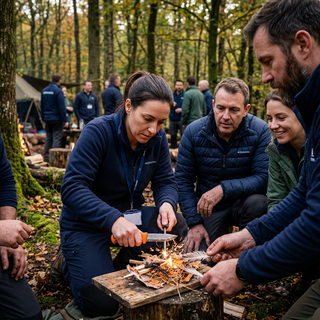

長野県茅野市・ブッシュクラフト研修
自然の中の知恵を学び、チームの温度を高める1泊2日
プラン概要
ブッシュクラフトは、ヨーロッパ・北欧で発祥した、自然と親しみ、自然の中にあるものを最大限に活用する遊びと生存の技術です。
人が山や森に親しみ、野外で快適に過ごすための技術や知識は、災害や事故などの「イザというとき」に自身や仲間を助けるサバイバル術にも直結します。リフレッシュしながら生きる知恵を学ぶひとときは、チームの一体感を高め、未来志向のコミュニケーションを自発的に促します。

火起こしを通じた原初的な体験
ブッシュクラフトでの火起こしの定番は「ナイフと火打ち石」。着火剤やライターとは違い、そう簡単にはつきません。チームで知恵を出し合い、小さな火種を育てていくプロセスは、新規事業における仮説検証やチームビルディングそのものです。
実施スケジュール例
Day 1（金曜日）
現地集合・チェックイン
TINY GARDEN 蓼科に集合。オリエンテーションを実施します。
サバイバルの5要素講習（座学）
サバイバルの基礎知識である「生存のための5要素」を座学形式で。生きるために必要な基本のキを学びます。（約30分）
火起こし実習
ナイフと火打ち石を使った火起こしに挑戦。火を使って実際に簡単な調理も行います。（約1.5〜2時間）
ミーティング / 振り返り
会議室を利用し、ここまでの体験に基づく気づきをチームでシェアします。
夕食（BBQ）
自分たちで買い出し・準備した材料でBBQ。リラックスした歓談の時間。
焚き火ミーティング（任意）
焚き火の炎を囲みながら、普段の業務では話しにくい深い対話を行います。
Day 2（土曜日）
朝食
ナイフワーク / グリーンウッドワーク
ブッシュクラフトに欠かせないナイフの安全な使い方、少ない力で扱う方法など、屋外活動の基本を実習します。生木を削ってスプーンや箸を作ります。
クロージングセッション
1泊2日全体の振り返りと、日常の業務への持ち帰り（抽象的概念化）を行います。
解散
※希望に応じて14:00まで会議室の延長利用が可能です。